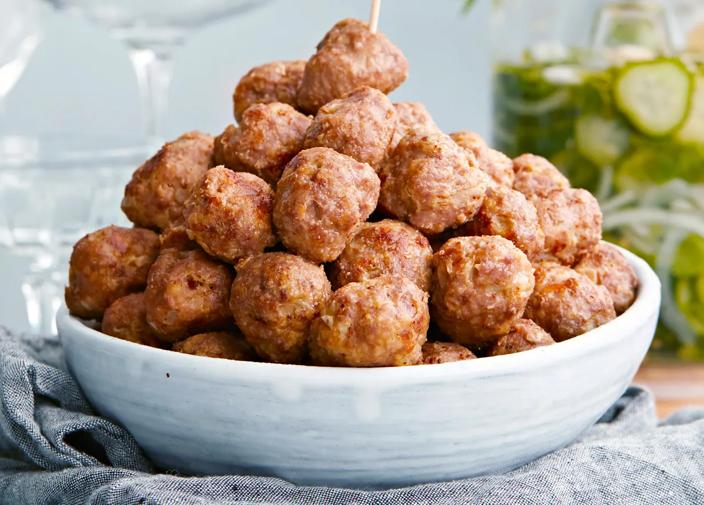

lihapullat

Lihapullat on yksi suomalaisten suosikkiruoista. Arjen klassikkolihapullat tehdään helposti ja nopeasti sipulikeittoaineksista. Noin 1,30€/annos.*
- 600 g naudan jauhelihaa (17 %)
- >nauta-sikajauhelihaa
- >1 ps (57 g)
- Pirkka sipulikeittoaineksia
- 1/2 dl
- korppujauhoja
- 1/2 tl
- mustapippuria
- 1 tlk (200 g)
- 1 1/2 dl
- Pirkka laktoositonta kermaviiliä 10%
- vettä
- kananmuna